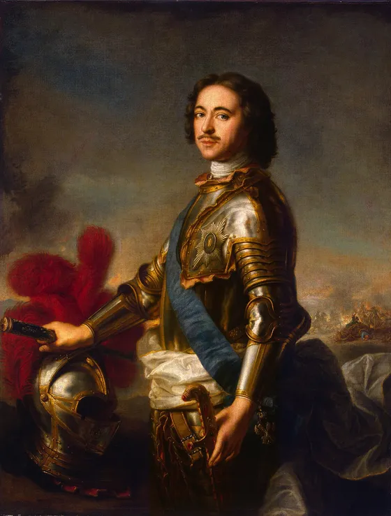
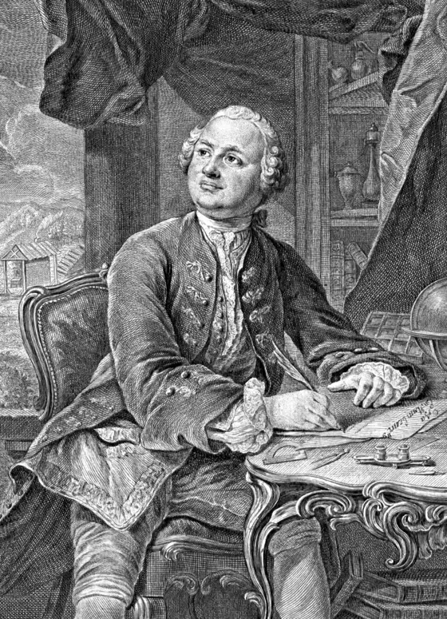
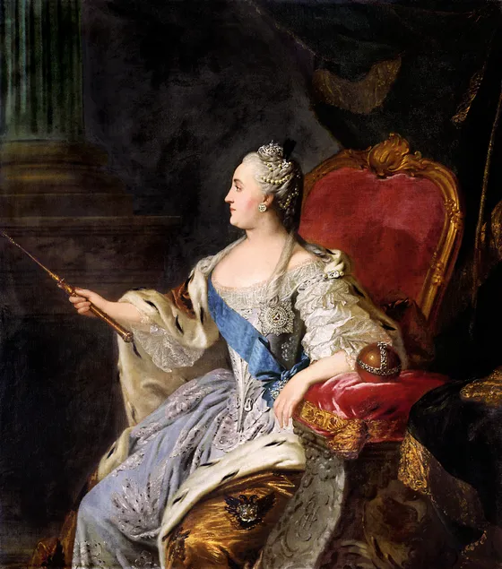
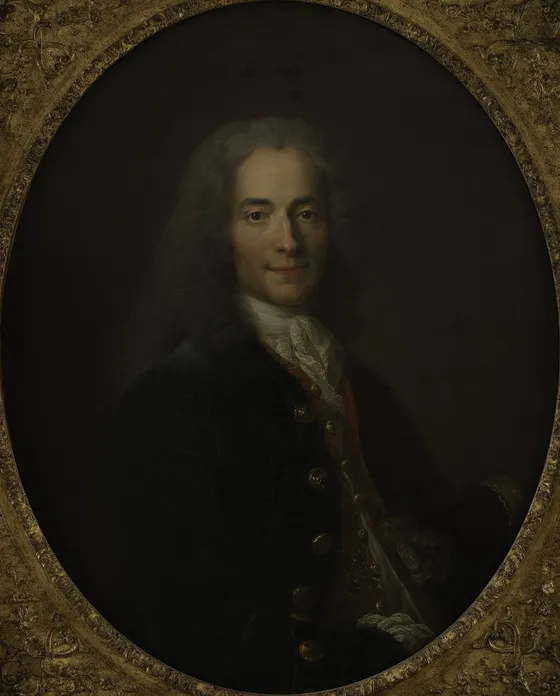
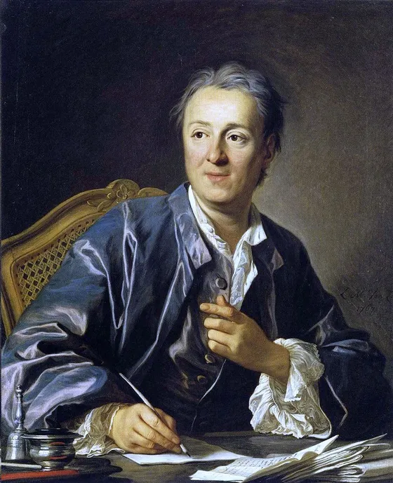
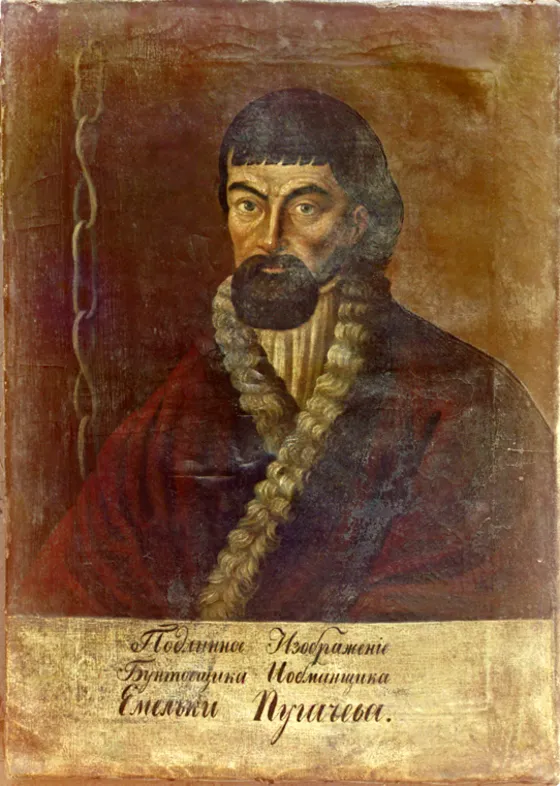
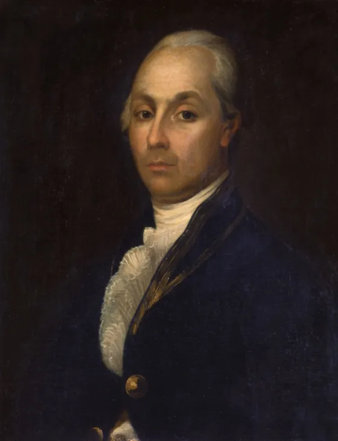

¿Qué fue la Ilustración?
La Ilustración fue un movimiento intelectual europeo del siglo XVIII que propuso usar la razón, y no la tradición ni la autoridad religiosa, para entender el mundo y organizar la sociedad.
Sus autores confiaban en la ciencia, la educación y las leyes escritas. Criticaban los privilegios heredados, la censura y los castigos crueles, y defendían la tolerancia religiosa y la idea de que las personas tienen derechos por naturaleza.
- Montesquieu, El espíritu de las leyes (1748): el poder debe dividirse para que nadie abuse de él.
- Voltaire: defensa de la tolerancia y crítica del fanatismo.
- Diderot y d’Alembert, la Enciclopedia (1751–1772): reunir todo el saber de su tiempo.
- Rousseau, El contrato social (1762): el poder nace del acuerdo de los ciudadanos.
- Beccaria, De los delitos y las penas (1764): contra la tortura y la pena de muerte.
Rusia antes de las luces
A finales del siglo XVII, Rusia era el Estado más extenso de Europa, pero vivía casi aislada de las ideas de Europa occidental.
El zar gobernaba como autócrata: su poder no tenía límites legales. La Iglesia ortodoxa controlaba casi toda la educación y la imprenta, y la mayoría de la población eran campesinos, gran parte de ellos siervos atados a la tierra y a la voluntad de sus señores.
Ese punto de partida explica todo lo que vino después: en Rusia no había una burguesía fuerte ni universidades que pidieran reformas. Si las ideas nuevas iban a entrar, tendrían que entrar por la puerta del palacio.
Pedro el Grande abre la puerta

Pedro I no fue un filósofo, sino un gobernante práctico obsesionado con alcanzar a Europa. Sus reformas prepararon el terreno para la Ilustración rusa.
Entre 1697 y 1698 viajó de incógnito por Holanda e Inglaterra en la llamada Gran Embajada; trabajó en astilleros y visitó talleres, museos y observatorios. A su regreso ordenó cortar barbas, vestir a la europea y contar los años desde el nacimiento de Cristo a partir de 1700.
- 1703Funda San Petersburgo sobre el río Nevá y aparece Védomosti, el primer periódico ruso.
- 1708–1710Crea el alfabeto civil: letras más sencillas para imprimir libros que no fueran religiosos.
- 1722La Tabla de Rangos permite ascender en el servicio al Estado por mérito, no solo por linaje.
- 1724Decreta la Academia de Ciencias de San Petersburgo, que abrió en 1725, ya después de su muerte.
Pedro modernizó el Estado, el ejército y la técnica, pero lo hizo con mano dura y sin tocar la servidumbre. Ese modelo, cambiar todo desde arriba, marcaría el siglo.
Lomonósov y la ciencia rusa

Durante el reinado de Isabel I (1741–1762) apareció el primer gran científico ruso: Mijaíl Lomonósov, hijo de un pescador del mar Blanco.
Lomonósov estudió en Moscú y en Alemania y trabajó en química, física, astronomía, geología e historia. También escribió poesía y una gramática de la lengua rusa. Para él, el saber no debía depender del origen social.
Con el apoyo del noble Iván Shuvalov impulsó la Universidad de Moscú, fundada en 1755, que hoy lleva su nombre. En 1757 se creó también la Academia de Bellas Artes en San Petersburgo.
Catalina II, la emperatriz filósofa

Catalina II, una princesa alemana que llegó al trono en 1762 tras derrocar a su esposo, Pedro III, quiso ser vista en Europa como una gobernante ilustrada.
Leía a los filósofos franceses y se escribía con ellos. Mantuvo correspondencia con Voltaire desde 1763 hasta la muerte de él, en 1778; Voltaire la llamaba «la Semíramis del Norte». En 1765 compró la biblioteca de Diderot, que pasaba apuros económicos, le permitió conservarla en vida y le pagó como su bibliotecario. Diderot viajó a San Petersburgo entre 1773 y 1774 y conversó con ella casi a diario.


El Nakaz: leyes escritas con Montesquieu en la mano
En 1767 Catalina redactó el Nakaz («Instrucción»), un texto para guiar a una comisión que debía escribir un nuevo código de leyes. Gran parte de sus artículos venía de Montesquieu y de Beccaria: proponía la igualdad de los ciudadanos ante la ley y criticaba la tortura y los castigos excesivos. En Francia, el libro fue prohibido por considerarse demasiado atrevido.
«Rusia es una potencia europea».
La Comisión Legislativa reunió en Moscú a más de quinientos diputados de la nobleza, las ciudades, los cosacos y los campesinos libres del Estado. Los siervos no tuvieron representantes. Tras más de un año de debates, la comisión se suspendió en 1768 por la guerra contra el Imperio otomano y nunca aprobó el código.
Cultura, ciencia y educación
- 1764Compra en Berlín una colección de pinturas que dará origen al museo del Hermitage, y funda el Instituto Smolny, la primera escuela del Estado para niñas nobles.
- 1765Nace la Sociedad Libre de Economía, para estudiar la agricultura con métodos modernos.
- 1768Se vacuna contra la viruela con el médico inglés Thomas Dimsdale para dar ejemplo a su pueblo.
- 1786El Estatuto de Escuelas Públicas crea escuelas en las capitales de provincia.
Los límites de las luces
Mientras Catalina conversaba con los filósofos, la vida de millones de siervos empeoraba. Aquí es donde la Ilustración rusa encontró su frontera.
Catalina necesitaba el apoyo de la nobleza, dueña de la tierra y de los siervos. Por eso, en lugar de reducir la servidumbre, la reforzó: en 1767 prohibió que los siervos presentaran quejas ante ella contra sus amos, y en 1783 la servidumbre se extendió a la Ucrania de la orilla izquierda del Dniéper. En 1785, la Carta a la Nobleza confirmó los privilegios de los nobles.

La rebelión de Pugachov (1773–1775)
El cosaco Yemelián Pugachov se hizo pasar por el difunto Pedro III y prometió libertad a los siervos. Su rebelión se extendió por el Volga y los Urales y reunió a campesinos, cosacos, obreros de las minas y pueblos no rusos. Fue derrotado y ejecutado en Moscú en 1775. El miedo a otra revuelta hizo a Catalina aún más cauta.

Radíshchev y el fin de la tolerancia
La Revolución francesa de 1789 asustó a los monarcas de Europa. En 1790, Alexandr Radíshchev publicó Viaje de San Petersburgo a Moscú, un libro que describía con crudeza la servidumbre y criticaba la autocracia. Catalina lo llamó «un rebelde peor que Pugachov». Fue condenado a muerte, pena que se cambió por diez años de destierro en Siberia.
En 1792 fue encarcelado el editor Nikolái Nóvikov, que había publicado revistas y libros para un público amplio, y en 1796 un decreto impuso la censura y cerró las imprentas privadas.
Lo que quedó
La Ilustración no transformó la estructura política ni social de Rusia en el siglo XVIII, pero dejó instituciones, lectores y preguntas que ya no se podían borrar.
Quedaron la Academia de Ciencias, la Universidad de Moscú, el Hermitage, nuevas escuelas y una nobleza educada que leía en francés y discutía sobre leyes y derechos. Con Alejandro I se fundaron nuevas universidades, como las de Kazán y Járkov, y el ministro Mijaíl Speranski preparó planes de reforma del gobierno.
Parte de esa nobleza educada protagonizó la revuelta decembrista de 1825, el primer intento de imponer un régimen constitucional en Rusia, que fue aplastado. La servidumbre duró hasta 1861, cuando la abolió Alejandro II.